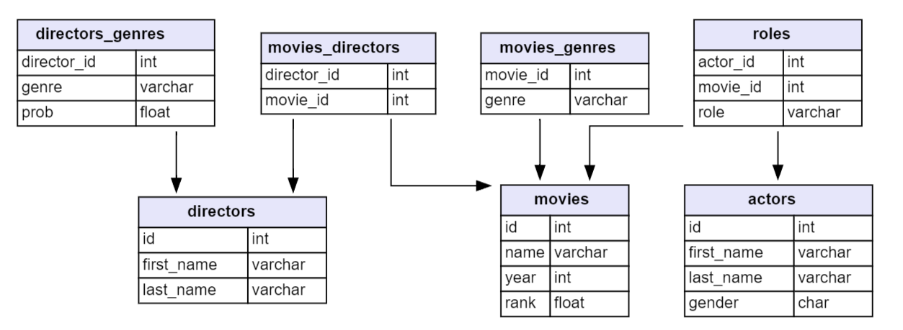

# url <- "https://raw.githubusercontent.com/gato365/stat331-calpoly-gato365/master/midterms/midterm-exam-2/take-home-exam-2/gather-imdb-movies.R"
# if (!"purrr" %in% installed.packages()) install.packages("purrr")
# source(url)Midterm Exam II Take Home
Midterm Exam I Take Home Assignment Rules
Download starter .qmd file from Canvas
If the above link does not work, go to Canvas and go to module 8 and scroll until you see the this file and download it.
Collaboration: You are allowed to collaborate with your assigned group members. This includes discussing the exam questions, sharing ideas, and working together to find solutions. However, you should ensure that all final answers are your own work and not simply copied from others. Again, Make sure your code does not look like your peers. List who you worked with.
Use of
ChatGPT: You are permitted to useChatGPTas a resource during the exam. This can be helpful for clarifying concepts, generating ideas, or checking your work. However, remember thatChatGPTis a tool and not a substitute for your own understanding and analysis.No External Communication: You are not allowed to communicate with anyone outside of this class about the exam. This includes classmates not in your assigned group, tutors, friends, family, online forums, etc. The goal of this rule is to ensure that your work is your own and not influenced by external sources.
Reporting Communication: If you do have any conversations related to the exam (within your group or with
ChatGPT), you should report this to the instructor. Include who you spoke with and a brief section at the bottom of the markdown file regarding your collaboration efforts.
5. Please note that the midterm assignment is expected to be submitted in HTML format by 10 am on the upcoming Tuesday morning.
Data for Questions 1-2
Get Data for Questions 1-2
Run the following code to gain access to the tables for questions 1-2. Uncomment the code and run it.
Schema for Questions 1-2

Questions
1. Joins I
We are interested in exploring the IMDb database, which contains information about actors, roles, and movies.
Part a. Join the actors, roles, and movies tables from the IMDb database into a single data frame.
Part b. Use R to create a plot that shows the number of male and female actors who acted in each year, based on the data frame from part a. Include the text of each gender regarding each year in the plot. Pretend as if the amount of details in this plot is going to affect your salary. Be as very detailed with your plot.
Part c. Write a paragraph that summarizes and interprets the plot from part b. Discuss any trends, patterns, or anything dramatic that you observe.
2. Joins II
We are interested in exploring the IMDb database even more, which contains information about movie_genre and movies.
Part a. Join the movie_genre and movies tables from the IMDb database into a single data frame.
Part b. Use R to create aplot that shows the average rating per genre with 99% confidence intervals, based on the data frame from part a.
Part c. Write a paragraph that summarizes and interprets the plot from part b. Discuss any differences, similarities, or outlandish genres that you observe.
3. Function Creation I
Write a function that can filter a data frame by a given value. Use ChatGPT to create 2-3 sample data frames with different values. These data frames do not have to be substantial, however, they must include at most 10 rows and 4 columns. You can have fun with the data frames you create. Display all the code for making the data frames and applying the function to them.
4. Function Creation II
Write a function that can do the following with a data frame based on already existing variables in the data frame:
- If it has two numeric variables, create a new variable that is their product.
- If it has two string variables, create a new variable that is their concatenation with a ” - ” in between.
- If it has two variables of different types, do nothing.
Use ChatGPT to create 2-3 sample data frames with different types of variables. These data frames do not have to be substantial, however, they must include at most 10 rows and 4 columns. You can have fun with the data frames you create. Display all the code for making the data frames and using the function on them.
5. How did you arrive at your answers?
Describe how you used ChatGPT, friends, and other resources to complete this exam. If you do not explain this clearly, you will lose marks on your exam 2 score. List who you worked with.